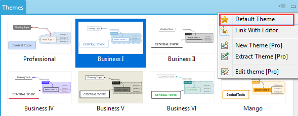

Theme and Theme Editor
Theme is the collection of colors, shapes, line patterns, and other coordinated graphical attributes of a mind map. We can apply the theme with one step to change the whole mind map's style. Also, theme can be customised and saved for future use for other maps. XMind has already prepared multiple well-designed themes.
To Change Theme- Open Theme View by clicking "Window-Theme".
- Double-click the theme to apply.
- Design your own theme by choosing color, shape, line, background.
- Choose " Tools > Extract Theme..." on the menu.

- Name this new theme in the "Theme View".
- Now you can apply this theme to other maps.
Note: Every theme can only use one kind of topic and boundary style.
Set the default ThemeEvery blank mind map is applied with the default theme. And we can set any theme as the "Default theme" freely.
- Open the theme view, and click the target theme.
- Click the star icon from the dropdown menu at the upper right corner of the theme view.

Theme editorWe can further design the theme with theme editor, and preview it seamlessly.
- Open the theme view by clicking "View - Theme"
- Right clicking on the target theme, and choose "Edit the theme"
- Select the objective at the upper right corner of the dialog, and change the corresponding properties settings
- Click “Save as a new theme”